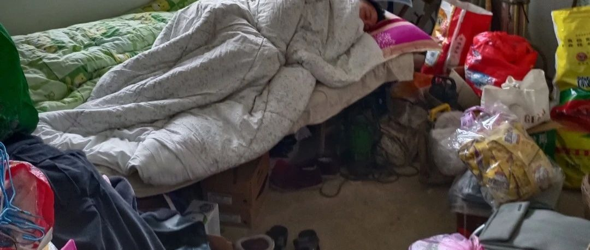

《化繭成蝶20》《蛻變經歷》
原创
youzikuayuerizhi
游子跨越日志记录
2024年05月22日 04:11
上海
《人生如夢》
金也空，銀也空，
死後何曾握手中。
名也空，利也空，
轉眼荒郊土一封。
房也空，屋也空，
換了多少主人翁。
喜也空，悲也空，
一切都是在夢中……
“神馬”——都是浮雲！
人生路漫漫，
苦樂分兩端。
今時命多舛，
黃泉不復還。
真闺蜜
假闺蜜
不在于多亲密
在您困难的时候
您说一声
ta会搭把手
在您困难的时候
ta会帮助您
当您走出“困难”的时候
ta会远远的看着您
当您
“功成身退”的时候
ta会祝福您
时间不语
却
可以解答所有……
冰凍三尺，非一日之寒……
2023年的冬天特別的冷……
白雪茫茫，寒風凜冽，冷風刺骨……
熟係的地方，陌生的《妳我》……
个人观点，仅供参考